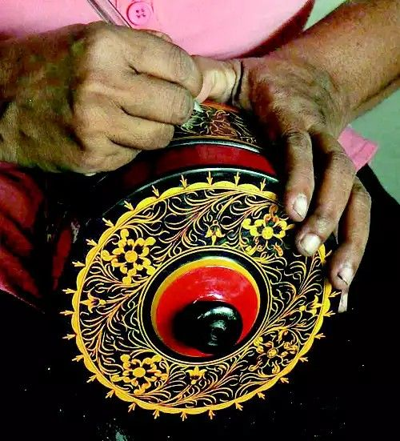
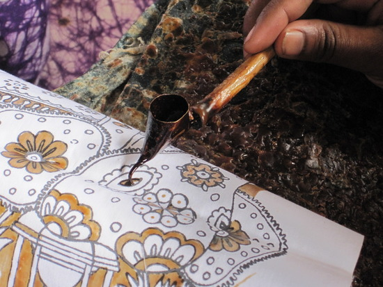

There are various handicrafts of the war in Sri Lanka which reflect the culture of Sri Lanka. These are beautifully designed and have become a major tourist attraction.Perfect locally, these products will surely be fond memories for tourists.


The following are some types of Sri Lankan art and crafts.
- Wood carving
- Clay (pottery)
- Bathik
- Beeralu lace
- Wewal
- Veniwalgata